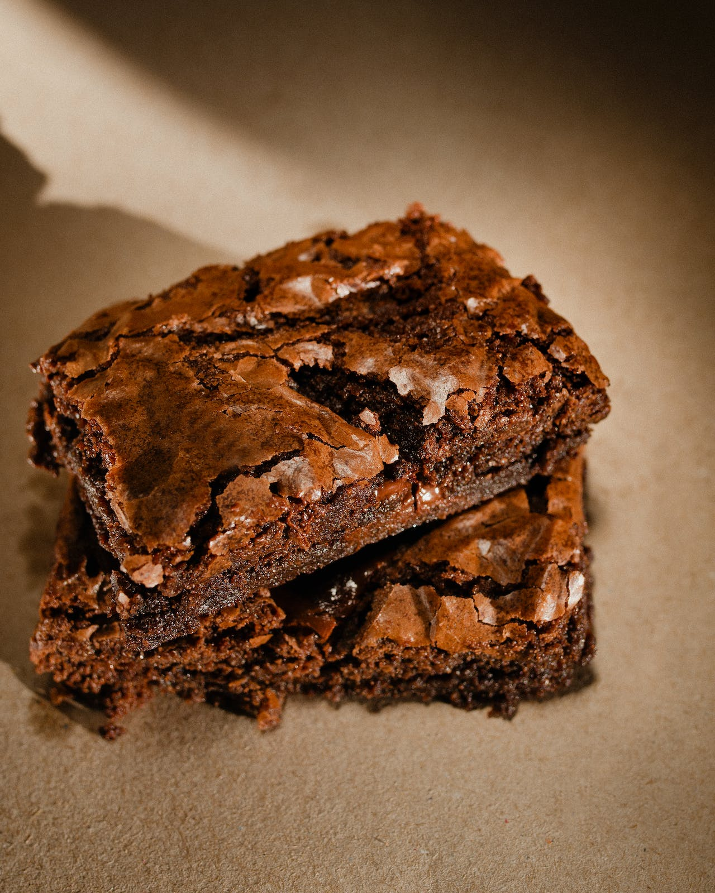

- Em um recipiente, coloque os ovos, o açúcar e bata com um fouet até a mistura ficar clarinha e homogênea. Reserve;
- Em outra vasilha, coloque o chocolate meio amargo picado, a manteiga e derreta no micro-ondas de 30 em 30 segundos (pode ser no banho-maria também);
- Despeje o chocolate na mistura de ovos com açúcar e misture bem até incorporar;
- Adiciona o chocolate em pó peneirado e misture, delicadamente, com movimentos de baixo para cima;
- Acrescente a farinha de trigo peneirada, misturando com movimentos de baixo para cima;
- Finalize com a pitada de sal e misture até incorporar;
- Transfira a massa para uma forma de 15cmX25cm untada, polvilhada com chocolate em pó e espalhe bem;
- Leve ao forno preaquecido a 180 ºC por cerca de 30 minutos, ou até formar uma casquinha por cima e ao espetar um palito no meio da massa, ele sair um pouco sujo (não muito sujo, apenas um pouquinho);
- Corte em quadradinhos e sirva. Bom apetite!